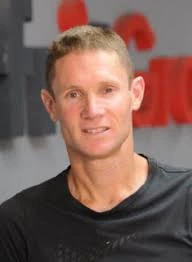

כפר עזה
גולדשטיין אלמוג נדב יהודה ז"ל
סמנכ״ל פיתוח עסקי וחדשנות; לשעבר סמנכ״ל כספים ומנכ״ל כפרית ישראל
סיפור חיים
נדב יהודה גולדשטיין־אלמוג ז״ל, בנם של ורדה ודוד, נולד בכ׳ בכסלו תשל״ה, 3 בדצמבר 1974. הוא התגורר בקיבוץ כפר עזה, שם בנה את חייו עם רעייתו חן ועם ילדיהם: ים, אגם, גל וטל.
נדב היה איש משפחה אוהב ומסור, בן זוג, אב, בן ואח אהוב. משפחתו הייתה מרכז חייו, והוא היה נוכח, מחובר ומלא אהבה לילדיו ולבית שבנה בכפר עזה.
נדב עבד בכפרי 20 שנה ובמהלך השנים היה סמנכ״ל כספים מנכ״ל כפרית ישראל ובשנים האחרונות סמנכ"ל פיתוח עסקי וחדשנות . נדב, שהיה איש של חזון, עשייה, מנהיגות וחדשנות- אדם שהקדיש את מרצו, כישרונו ואהבתו לפיתוח טכנולוגיות. נדב תמיד ידע לחשוב מחוץ לקופסה, לחקור, בחיבור העמוק שלו לספורט סיבולת, בענווה האופיינית לו, ובדרך הייחודית שבה שילב בין חזון עסקי ומקצועי לערכים אישיים ואנושיים.
נדב היה חלק מקהילת כפר עזה, קהילה שבה חי, גידל את ילדיו והיה שותף למרקם החיים המקומי. חבריו נשאו את ארונו במדי קבוצת הטריאתלון ״אתגרית עוטף עזה״, קבוצה שהייתה חלק מעולמו ומקהילת החברים שסבבה אותו.
בני המשפחה חיו יחד בכפר עזה כמשפחה חמה ומלוכדת. ים, בתם הבכורה של נדב וחן, הייתה בת 20 במותה. אגם, גל וטל היו אחיה הצעירים, והמשפחה כולה הייתה קשורה לבית, לקהילה ולאדמת הקיבוץ.
שבעה באוקטובר
שבעה באוקטובר והימים שאחריו בבוקר שבת, שמחת תורה תשפ״ד, 7 באוקטובר 2023, חדרו מחבלים לקיבוץ כפר עזה במסגרת מתקפת הטרור הרצחנית על יישובי עוטף עזה.
בני משפחת גולדשטיין־אלמוג שהו בביתם שבכפר עזה. כאשר הבינו שמחבלים חדרו לקיבוץ, נכנסו לממ״ד וניסו להסתתר. במשך שעות ניסו בני המשפחה לשרוד את המתקפה.
מחבלים פרצו לביתם ורצחו את נדב ואת בתו הבכורה ים. חן ושלושת ילדיהם, אגם, גל וטל, נחטפו לרצועת עזה והוחזקו בשבי חמאס במשך 51 ימים, עד ששוחררו במסגרת עסקה.
נדב יהודה גולדשטיין־אלמוג נרצח בכפר עזה בכ״ב בתשרי תשפ״ד, 7 באוקטובר 2023. בן 48 היה במותו.
נדב ובתו ים נקברו תחילה בקיבוץ שפיים, בזמן שחן, אגם, גל וטל עוד היו בשבי ולא יכלו להשתתף בהלוויה. בהמשך הובאו נדב וים למנוחת עולמים בבית העלמין של קיבוץ כפר עזה, האדמה שבה חיו ושאליה השתייכו.
זיכרון והנצחה
זיכרון ומילים מהלב אגם, בתו של נדב ואחותה של ים, סיפרה כי בזמן שהייתה בשבי בעזה חשבה על אביה ואחותה, דמיינה את קבריהם וחשבה מה תכתוב על מצבותיהם. היא אמרה כי מעולם לא דמיינה שהם לא קבורים בכפר עזה.
בהלוויה השנייה בכפר עזה אמרה אגם כי בשבת ההיא היו לבד, אך ביום הקבורה המחודשת הרגישו עטופים. היא דיברה על שני הבורות שנפערו בליבה - של אביה ושל אחותה שנרצחו לנגד עיניהם - ועל השנים שבהן זכתה לאב ולאחות שהעניקו לה בית, משפחה, חוויות וזיכרונות.
חן, רעייתו של נדב ואימה של ים, סיפרה כי כאשר הייתה בשבי בעזה עם אגם, גל וטל, שמעה ברדיו מילים שאישרו לה כי נדב וים אינם בין החיים. היא אמרה כי העברתם לקבורה בכפר עזה הוא מעמד קשה מנשוא, אך היא מתנחמת בכך שהם קבורים כעת ליד אנשי הקיבוץ שנרצחו ונפלו באותו יום.
ורדה, אימו של נדב וסבתה של ים, אמרה כי חזרתם של נדב וים לכפר עזה היא סגירת מעגל כואבת. היא סיפרה כי חן והילדים, ששרדו את השבי בעזה, נושאים איתם עצב וגעגוע, אך גם מראים שלאט לאט אפשר להגיע לריפוי ולשיקום.
נדב נזכר כאב, בן זוג, בן, אח וחבר אהוב; אדם שחי את כפר עזה, את משפחתו ואת קהילתו. זכרו וזכרה של ים נשארים בלב חן, אגם, גל וטל, במשפחתם, בקהילת כפר עזה ובכל מי שנחשף לסיפורם.
יהי זכרו ברוך.